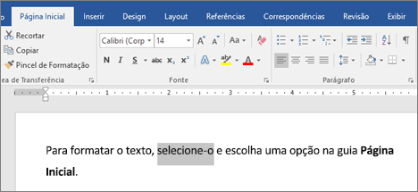
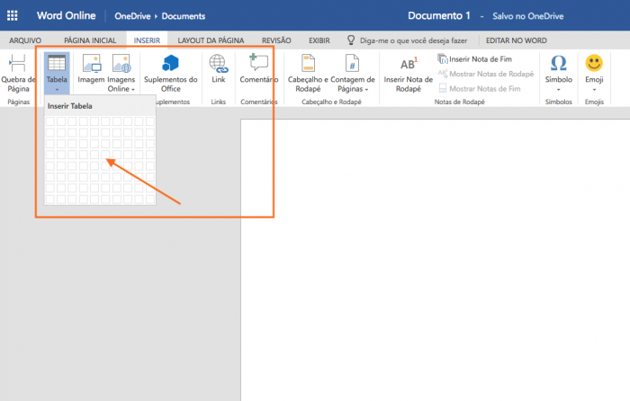
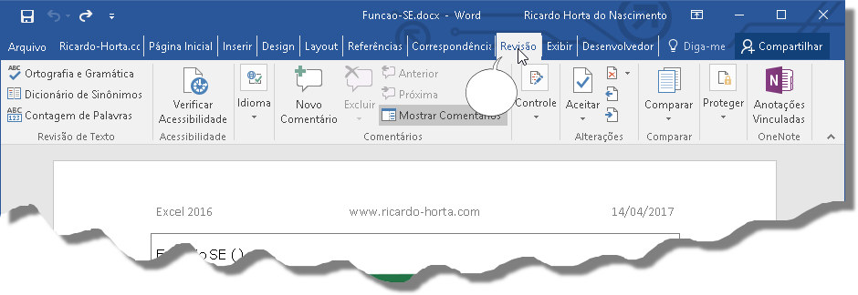
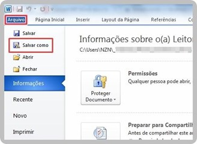

DEFINIÇÃO:
O WORD é um editor de textos, que pertence ao Pacote Office da Microsoft. Suas principais características são: criação de textos, cartas, memorandos, documentos, mala direta, tabelas, figuras, bem como a formatação dos mesmos. Com inúmeros recursos disponíveis é possível utilizá-lo para facilitar e agilizar as tarefas.
Esta apostila foi elaborada com o objetivo de auxílio as atividades do curso e como forma de consulta. A seguir, serão ensinados alguns conceitos básicos para iniciantes do Word:
Formatação

Na Aba “Página inicial”, você encontrará diversas opções de formatação, como por exemplo: Fonte, Parágrafo, Tabulação e Letras maiúsculas e minúsculas
Fonte - todas as opções relacionadas à formatação de fonte estão contidas aqui; desde tipo de fonte, passando por estilo de fonte, letras, tamanho, cor, negrito, sobrescrito, subscrito até efeitos especiais como reflexo e sombra;
Parágrafo - é possível modificar algumas características dos parágrafos, tais quais o espaçamento entre as linhas, o recuo e os marcadores;
Tabulação - clicando em qualquer lugar da “régua” que fica acima da página, aparecerá o botão de tubulação, que poderá ser usado para alterar o alinhamento na linha ou parágrafo desejado;
Maiúsculas ou Minúsculas - clicando no botão “Shift” no seu teclado, alterará a letra para maiúsculas, e reciclando, retornará ao estado minúsculo.
Inserção

Na Aba “Inserir”, você encontrará diversas opções de inserção, como por exemplo: Tabelas, imagens, cabeçalho e rodapé e numeração da página;
Tabela - permite criar uma tabela ao estilo do Excel diretamente dentro do Word;
Cabeçalho e Rodapé - opções essenciais para um trabalho feito nas normas ABNT. Os cabeçalhos servem para incluir texto na margem superior enquanto os rodapés fazem o mesmo, mas, na margem inferior das páginas;
Numeração da Página - permite a escolha da contagem de páginas e em qual extremidade o número aparecerá;
Quebra de Página - permite encerrar a extensão da página antes mesmo de seu ápice;
Imagens – clique no botão para pesquisar e inserir uma imagem ou foto no trabalho.
Finalizando
Em “Revisão”, poderá ser feito a análise de ortografia e gramática, assim como também incluir uma anotação.
Ortografia e Gramática - ao clicar nesse botão, o Word percorrerá todo o texto grifando os possíveis erros ortográficos ou gramaticais que encontrar – é o primeiro botão da guia;
Anotação - o botão “Novo comentário” possibilita que o usuário deixe uma anotação oculta em qualquer parte do arquivo

Salvar e imprimir
E Por Fim, em “Arquivo” o usuário tem a possibilidade de Salvar e até mesmo Imprimir o arquivo word da forma que desejar.

Básico tutorial para iniciantes no editor de texto WORD